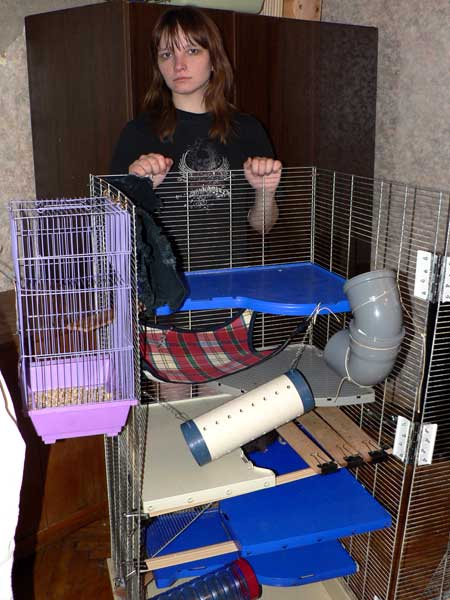
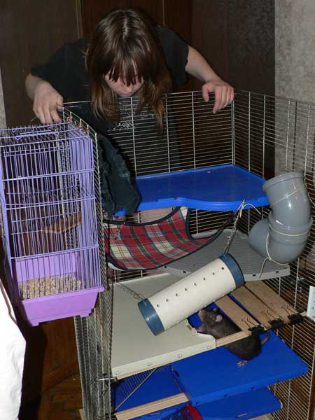
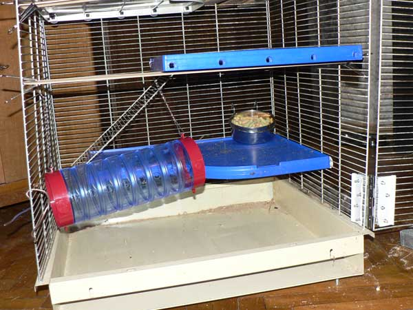
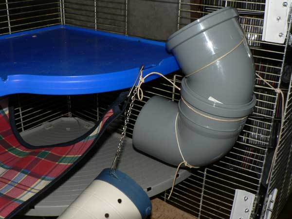
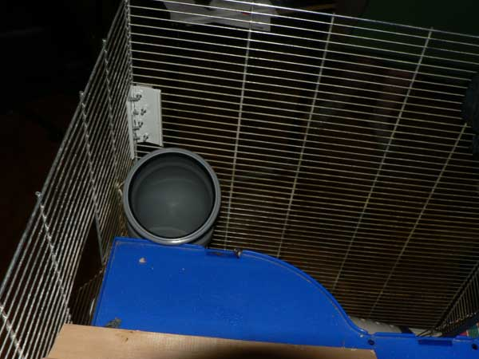
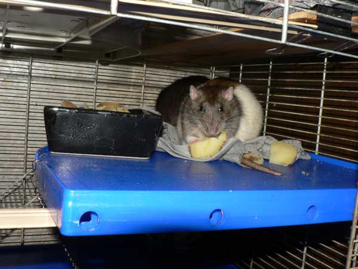
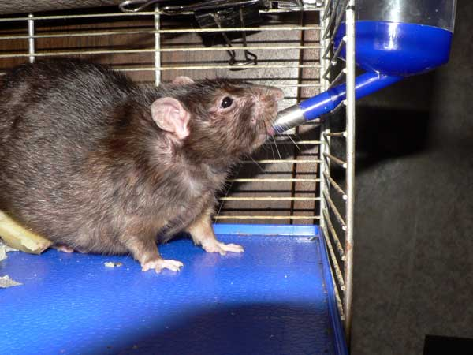
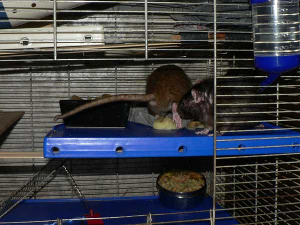

Июль 2009: обустройство клетки

Бывший плетеный домик. Иногда их приходится заменять, да.

Нормальный размер клетки для нескольких крысов.

Внизу — Нагваль Никодим.
Видны полки родные (синие), полки дополнительные
(серые) и все такое.
В клетке должно быть просторно и лазательно.

Слева — балкон из маленькой клетки (необязательный элемент).
Виден гамак
покупной и (вверху слева) трубчатый гамак из штанины от джинсов (не закреплен
еще, плохо видно).

Нижний этаж (наполнитель еще не насыпан).
Видна труба (надо перевесить,
расположение оказалось неудачным — не пользуются), миска с сухим кормом.

Гамак крупно. НЕпрозначная труба — крысы любят такие норообразные нычки.

Труба из пары колен пластиковых труб из хозяйственного магазина.
Иногда
пользуются, но думаю сменить на более горизонтальное крепление, чтобы можно было
сидеть.

Петля. Поскольку клетки проектируют те, кто никогда не содержал в них животных, и крысиных клеток с удобными дверцами нет в природе вообще, пришлось переднюю стенку повесить на три такие вот дверные петли. Очень удобно стало мыть.
Левее видны крепления из канцелярских зажимов для деревянных досочек (от упаковочных строительных ящиков, отшкурено), а поперек (на чем они держатся) — строительный алюминиевый порожек.

Верхняя полка с домиком, слева — трубчатый гамак.
Видно, как клетчаиый гамак снизу страхует пространство — вдруг кто упадет.

Спуск в канализацию имени К.Х. Хунты.

Обеденная полка.
Поскольку крепление полки за
три стенки невозможно, если передняя открывается, то полка опирается на
поперечную планку (алюминиевый порожек из магазина стройматериалов).

Левая часть: видна дополнительная площадь из досочек, крепление планки.

Прогулочный шкаф и переноска в роли «дачи» — справа вверху у клетки есть выход на шкаф.

Нагваль Никодим демонстрирует поилку.

Жильцы.